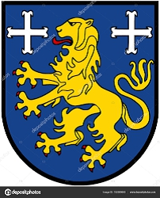

Antavla
24612234631 Reinhild Ludmilla of Friesland
Blev ca 47 år.

Far:
Gottfried Haraldsson Klakk of Friesland (840 - 885)
Mor:
Gisela de Lorraine (842 - 907)
Född:
omkring 870.
[1]
Död:
917.
[1]
Barn med
24612234630 Duke Dietrich (Theodoric) of Ringelheim (853? - 916)
Barn:
Matilda of Ringelheim (895? - 968)
Personhistoria
Årtal
Ålder
Händelse
870?
Födelse omkring 870
[1]
885
Fadern
49224469262 King Gottfried Haraldsson Klakk of Friesland
dör 885 Rustringen, Friesland. Nederländerna
[2]
895?
Dottern
12306117315 Queen Matilda of Ringelheim
föds omkring 895 Engern, Sachsen, Tyskland
[3]
907
Modern
49224469263 Queen Gisela de Lorraine
dör 907
[2]
910
Barnbarnet
6153058657 Hedwig of Sachsen
föds 910 Sachsen, Tyskland
[3]
916
Partnern
24612234630 Duke Dietrich (Theodoric) of Ringelheim
dör 916 Ringelheim, Tyskland
[3]
917
Död 917
[1]
Källor
[1]
Myheritage
[2]
Rootdmagic
[3]
Wikipedia